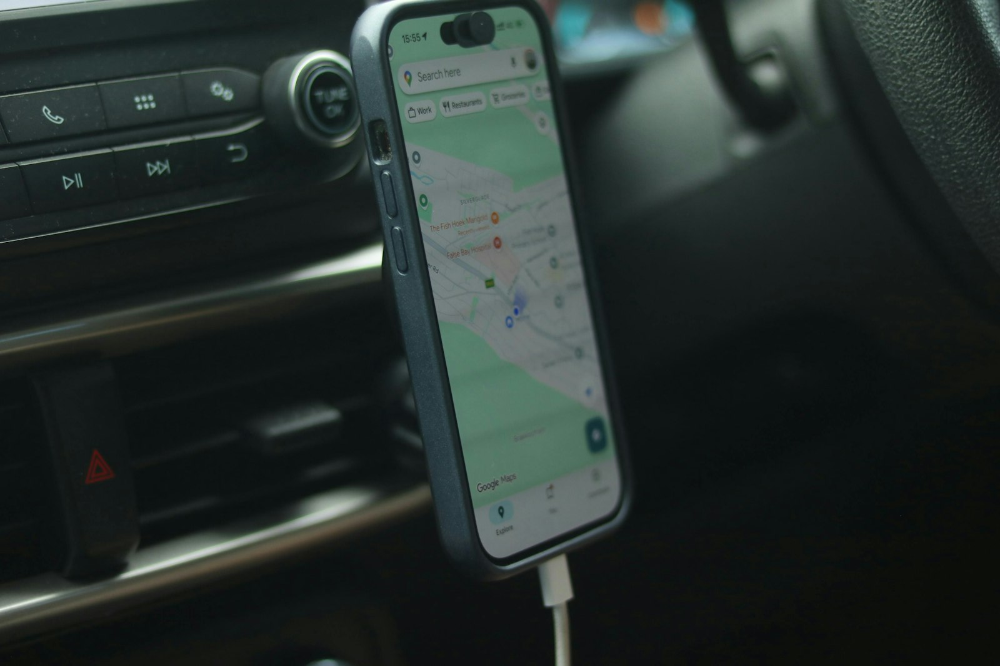

Photo by Alicia Christin Gerald on UnsplashMost parental control apps you'll find in the Play Store lead with the same pitch: screen time limits, app blocking, maybe a "see what they're doing" dashboard. Then, a few screens into setup, they ask for background location access. Not because a 9-year-old's phone location is the point — it's because it's easy to build, easy to demo, and easy to sell as a feature.
If you're a parent trying to manage screen time and content, not run a tracking operation, it's worth pausing on that. Here's what to actually look at before you install anything.
App store descriptions are written to sound reassuring. Permissions are not. Before installing any parental control app, check what it actually asks for on setup:
A permission by itself isn't proof of misuse — but it's the one part of the install flow that isn't marketing copy, so it's the part worth actually reading.
The pitch for location tracking is usually framed as safety: "know where they are." In practice, it means a company you've never met is continuously storing your child's real-world movements on a server somewhere, indefinitely, tied to their device. That data doesn't need to leak in a dramatic hack to be a problem — it's a standing liability the moment it's collected, regardless of how good the company's intentions are today.
There's also a quieter cost: location tracking changes the relationship. Screen time limits and content filtering are about managing a device. Location tracking is about surveilling a person. Kids notice the difference, even if they can't articulate it, and it tends to erode the trust that makes any parental control tool actually work long-term instead of just becoming something to circumvent.
If the actual goal is screen time and content — not location — look for:
We built Paxio specifically without location tracking — not as a limitation, but as a starting decision. It handles screen time limits, app blocking, bedtime scheduling, and content filtering (resolved on-device, not through a cloud filtering service), and that's the scope. No location history, no geofencing, no "see them on a map" feature waiting to be added later.
That's not because location features aren't technically easy to build — it's because the moment you're managing a device instead of tracking a person, the tool stays honest about what it's for.
Paxio handles the boundary, screen time, bedtime, app blocking, content filtering, without asking for anything beyond what those features actually need.